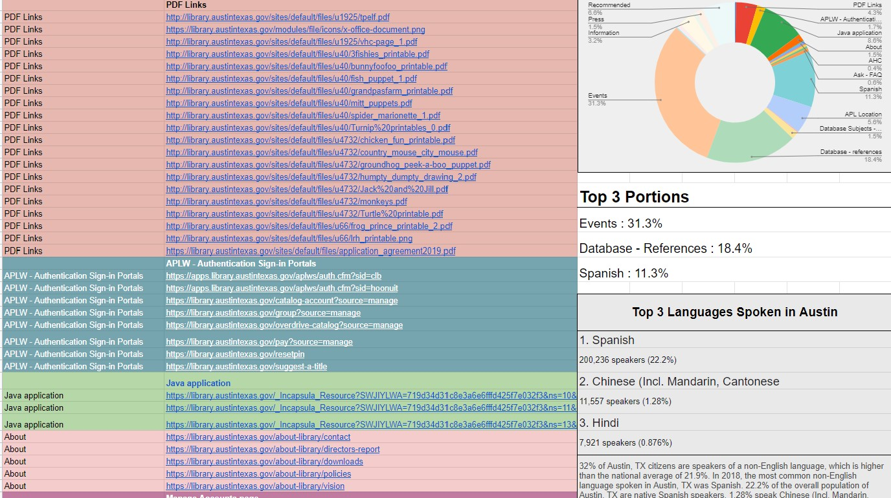
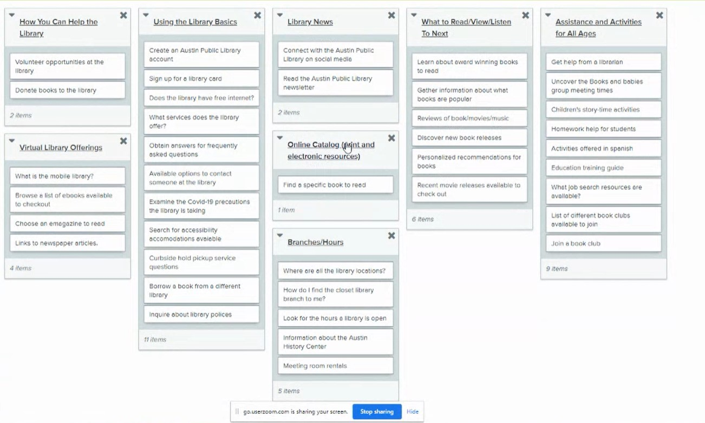
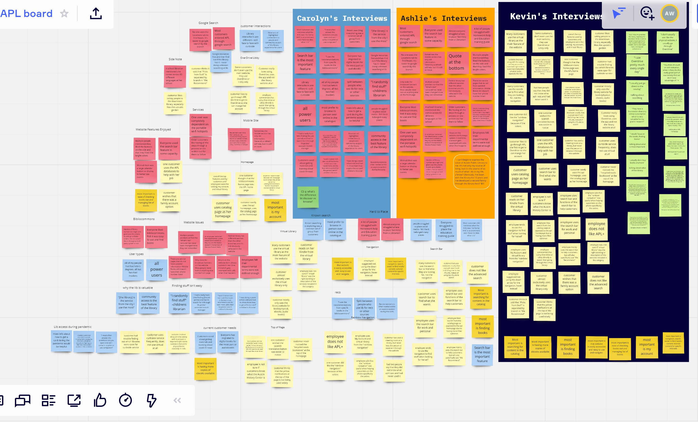
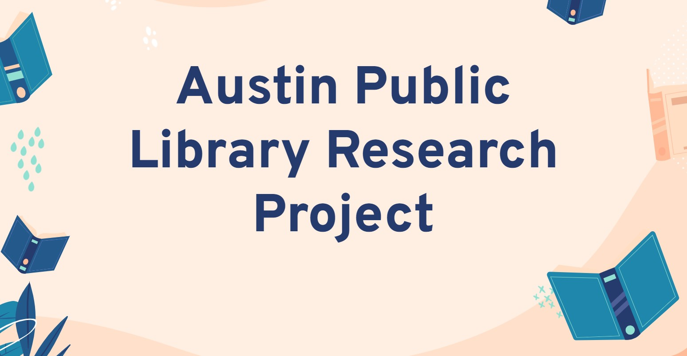

Austin Public Library Project
Watch My Case Study
View another Google Slide Presentationfor the same case study.
For my graduation project, I worked with a small team on a very large scale project collaborating with Austin Public Library's creative team. They desperately needed help, but we only had 12 short weeks! My team and I came up with a game plan that would help guide them in the right direction and set them up for future success. Watch the video to listen to me discuss my journey through this project
Content Audit
Austin Public Library (APL) mentioned that a lot of their traffic came from outside their site. This told us that people were searching google to access information on APL's website. This raised a yellow flag for me. I started with a content audit of the current website. I wanted to see how much they had and if it matched to the links in thier navagation.
It turned out that they had two navagations, and a very small search bar and the language in the navagation was very confusing.Since both libraians and customers used the website for information, syntax wasn't going to be easy. When you looked at the locations page, it was no wonder why people were searching from google. A user even told me in usablity testing that it was just easier to search for locations and hours via google search.
The content audit was an interesting piece of the puzzle. I also discovered that while APL had Spanish translated pages, they only took up 11.3% of the site's content. This also invoked my curiousity and I started digging into Austin's demography. Spanish speakers does make up the majority of languages spoken after English, but Chinese and Hindi came in second and third. Since the library is a source of social services, they don't offer any other language translations.
User Research
Time was short. We got delayed a week by the infamous deep freeze of 2021. We reached out via social media to recruit customers to interview remotely and lined up interviews with employees. My team's plan was to combine a card sort, user interview, and usabilty testing in each user's one hour interview. I conducted a brief interview, then proceeded with the card sort and wrapped up with some usabilty testing. It worked out very well for my team and we knocked out 20+ interviews in 2 weeks.
Synthasizing and Gaining Insight
My team and I came together to dicuss the insights we gleamed from out interviews. Turns out we each had our own passions that showed up only for our specfic users. This meant it was enough to brought up twice, but it wasn't a pattern. It was hard to let go of a fight that we wanted to fight for my user. But since it wasn't quite enough of a pattern, it was clear it wouldn't have been helpful for our client.
Presentation
This is the presentation that my team and myself delivered remotely to 50+ employees at Austin Public Library. We shared with them a break down of our insights, findings and offered our recommendations. It was thrilling to be able to share with them what each of us had discovered.